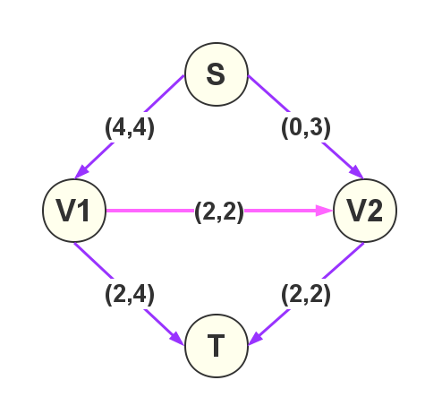
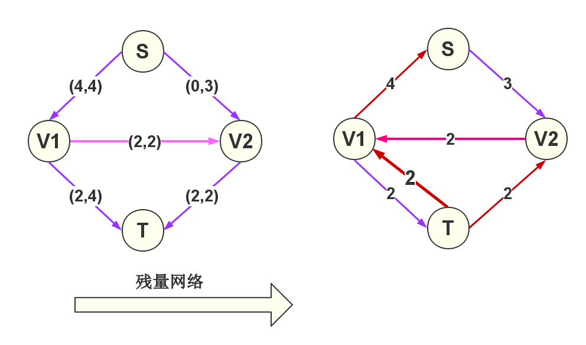
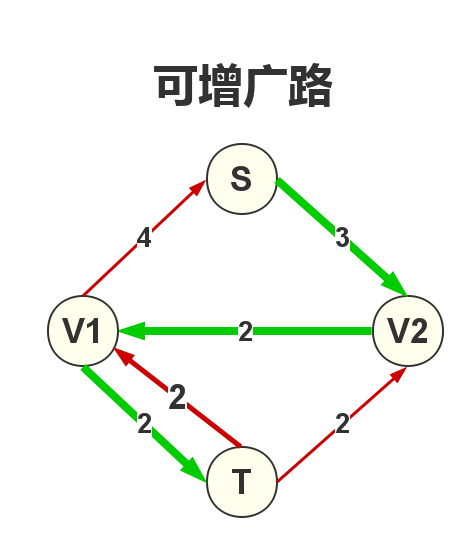

网络流入门
引用:一个题目
如下图,可以想像成一个输水网络,S是起点,T是终点.每一条边上有两个值(x,y),x表示这条边现在的流量,y表示这条边的最大流量.T结点现在接收的流量为4,问:T结点能接收的最大流量为多少?

最大为6!
入门学习
一些名词解释
- V表示整个图中的所有结点的集合.
- E表示整个图中所有边的集合.
- G = (V,E) ,表示整个图.
- s表示网络的源点,t表示网络的汇点.
- 对于每条边(u,v),有一个容量c(u,v) (c(u,v)>=0)
- 如果c(u,v)=0，则表示(u,v)不存在于网络中。
- 如果原网络中不存在边(u,v)，则令c(u,v)=0
- 对于每条边(u,v),有一个流量f(u,v).
网络流的三个性质
- 1、容量限制:
- 2、反对称性:
- 3、流量平衡: 对于不是源点也不是汇点的任意结点,流入该结点的流量和等于流出该结点的流量和。
结合反对称性,流量平衡也可以写成:
只要满足这三个性质,就是一个合法的网络流,也称为可行流。可行流至少有一个零流。
弧的分类
若给定一个可行流,我们把网络中的弧称作饱和弧， 的弧称作非饱和弧， 的弧称作零流弧,的弧称作非零流弧
若P是网络中联结源点s和汇点t的的一条路(不用管边的有向性)，我们定义路的方向是从Vs到Vt，则路上的弧被分为两类：一类与路的方向一致，称为前向弧；另一类和路的方向相反，称为后向弧
最大流问题
定义一个网络的流量(记为|f|)
最大流问题，就是求在满足网络流性质的情况下，|f|的最大值。
残量网络
- 为了更方便算法的实现，一般根据原网络定义一个残量网络。其中r(u,v)为残量网络的容量。
- r(u,v) = c(u,v) – f(u,v)
- 通俗地讲：就是对于某一条边（也称弧），还能再有多少流量经过。
- Gf残量网络,Ef表示残量网络的边集.

增广路(可改进路)
